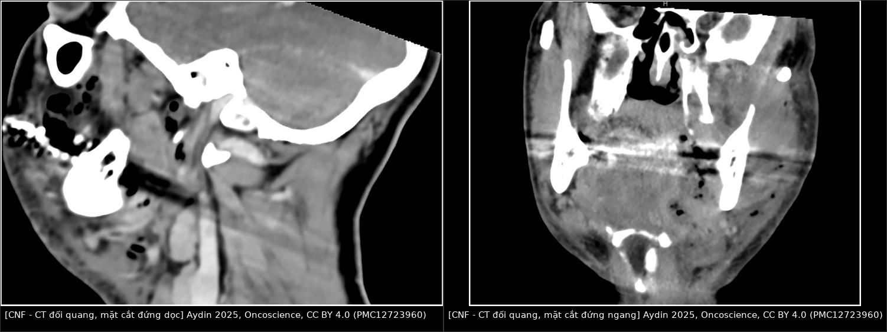
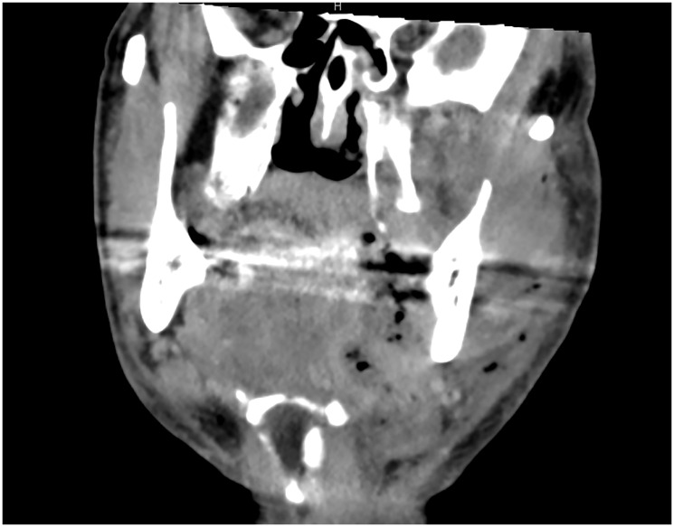
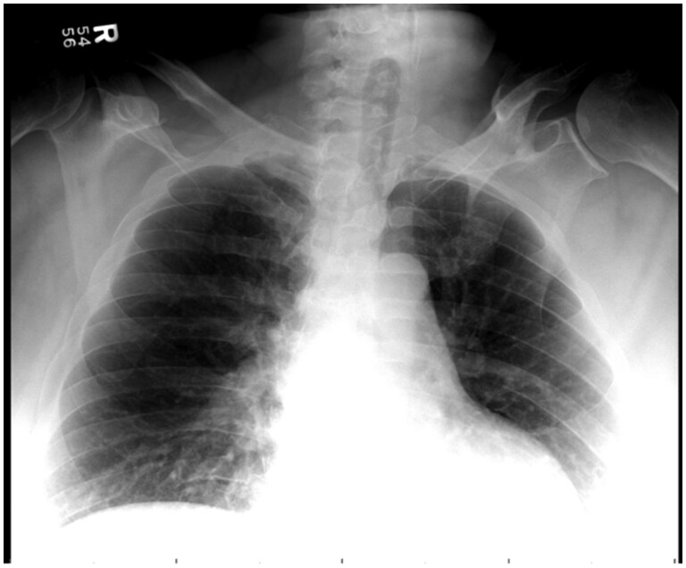

1939 — Viêm cân mạc hoại tử vùng cổ: khí trong cân, dày cân và cửa sổ cắt lọc tính bằng giờ / Cervical necrotizing fasciitis
Tags: pattern:khi-mo-mem pattern:day-can pattern:viem-mo-te-bao pattern:apxe vung:co vung:dau-co vung:trung-that protocol:CT-co-tuong protocol:MRI-co-tuong score:LRINEC score:nfSOFA
Mức chắc chắn (certainty): tổng hợp y văn (literature synthesis) — số liệu lấy từ tổng quan đầu–cổ Oncoscience 2025 (PMC12723960), tổng quan trung thất hoại tử Cureus 2026 (PMC13464360), đoàn hệ 26 ca J Clin Med 2026 (PMC13410499), loạt 26 ca Cureus 2024 (PMC11348871) và các ca minh họa CC BY 4.0. Nhóm không có bệnh nhân của mình; mọi con số đều là số của tác giả gốc, ghi kèm PMCID.
Câu chốt: đây là cấp cứu ngoại khoa, không phải bệnh nhiễm trùng điều trị bằng kháng sinh — chẩn đoán đặt trên đau không tương xứng + sưng lan tính bằng giờ + độc tính toàn thân, và CT có cản quang là chuẩn hình ảnh (dày cân, dịch chạy dọc cân, khí trong cân). Khí là dấu hiệu đặc hiệu nhưng không bắt buộc; ngược lại, khí dưới da một mình không đồng nghĩa hoại tử. Điều trị đúng là cắt lọc rộng ngay + cắt lọc lặp lại mỗi 24–48 giờ + bảo vệ đường thở.
1. Tổng quan bệnh học – cơ chế hình ảnh
1.1 Bệnh học và tốc độ lan
- Viêm cân mạc hoại tử (necrotizing fasciitis, NF) là hoại tử cân và mô mỡ dưới da kèm huyết khối vi mạch xuyên, lan dọc mặt phẳng cân — nơi mô liên kết lỏng, ít cản trở, nên tốc độ lan tính bằng giờ (tổng quan PMC12723960: từ viêm mô tế bào đến tổn thương cân sâu có thể trong vài giờ).
- Type I (đa vi khuẩn, ~phổ biến nhất ở cổ): hỗn hợp kỵ khí + hiếu khí, khởi điểm răng (odontogenic) hoặc họng; Type II: Streptococcus pyogenes đơn thuần; Type III: Clostridium (sinh hơi mạnh).
- Đoàn hệ Croatia 26 ca (PMC13410499): toàn bộ 21 ca do răng đều từ răng hàm dưới; tỉ lệ liên cầu giảm từ 82% xuống 33% sau đại dịch, xuất hiện thêm Acinetobacter, Candida, Corynebacterium; tỉ lệ mắc tăng 2,58 lần (KTC 95% 1,18–5,61).
- Loạt 26 ca Bucharest (PMC11348871): > 60% do răng, 30,8% đái tháo đường, 42,3% không có bệnh nền — tức bệnh vẫn chết người ở người trước đó khỏe mạnh.
1.2 TẠI SAO hình ảnh trông như vậy (vật lý + mô bệnh)
| Dấu hiệu trên CT | Vì sao (cơ chế) | Hệ quả đọc phim |
|---|---|---|
| Khí trong cân/mô dưới da | Vi khuẩn lên men kỵ khí sinh hơi và/hoặc khí được bơm vào bởi tay khoan nha khoa áp lực cao (PMC13464360) | Khí có HU ≈ −1.000 (không khí), tách hẳn mỡ (−100 đến −50 HU) trên cửa sổ mô mềm; nhưng cùng đậm độ khí có thể lành tính → phải đọc cùng bối cảnh |
| Cân dày, phù, dịch chạy dọc cân | Viêm thấm dịch + hoại tử cân; dịch đi theo mặt phẳng cân chứ không khu trú thành ổ | Dịch dài, dọc, bám mặt phẳng (khác ổ áp-xe tròn có vỏ) |
| Cân không ngấm thuốc | Huyết khối mạch xuyên nuôi cân → không có thuốc tới cân hoại tử | Đây là lý do bắt buộc CT có cản quang; CT không thuốc chỉ còn khí và dày cân |
| Da còn hồng hào, chưa loét | Máu nuôi da đi qua cân đã huyết khối; hoại tử da là dấu hiệu muộn | "Da lành" không loại trừ; đừng chờ da tím/hoại tử mới mổ |
| Tổn thương lan xuống trung thất | Khoang nguy hiểm (danger space) thông từ cổ xuống trung thất sau | Phải chụp tới cơ hoành, không dừng ở cổ |
1.3 Ngưỡng định lượng cần nhớ
- Tỉ lệ đầu–cổ trong tổng số NF: 3–10% (PMC13464360) — tổng quan khác ghi < 5% (PMC12723960): hai nguồn không thống nhất, dùng khoảng rộng và ghi rõ nguồn.
- Khoảng 1% nhiễm khuẩn răng nặng tiến triển thành NF; 1,5–3,6% nhiễm khuẩn cổ sâu tiến triển thành trung thất hoại tử (DNM) (PMC13464360).
- Tử vong CNF: đa số nghiên cứu 10–40%; đoàn hệ hiện đại 11,5% (3/26, PMC13410499); DNM có thể tới 40% (PMC13464360).
- Tiên lượng xấu: mổ trễ, tuổi > 60, đái tháo đường, suy thận, sốc nhiễm khuẩn lúc nhập viện (PMC12723960); cohort đầu–cổ ghi nhận đái tháo đường + nfSOFA ≥ 2 gắn với kết cục xấu (PMC13464360).
- Nằm viện trung vị 21 ngày (giai đoạn sau đại dịch) so với 12 ngày (trước đại dịch) (PMC13410499).
- Liệu pháp oxy cao áp (HBOT) hỗ trợ: tử vong 7,6% so với 13,4% ở tổng quan trước — nhưng HBOT không thay thế cắt lọc và không được làm chậm chuyển mổ (PMC12723960).
2. Mẫu hình + chẩn đoán phân biệt theo vị trí (gamut)
2.1 Định khu bằng véc-tơ đẩy (không đoán theo cảm giác)
- Mỡ khoang bên hầu (parapharyngeal fat) bị đẩy ra sau → tổn thương ở trước, tức khoang dưới hàm/dưới lưỡi (Ludwig).
- Mỡ khoang bên hầu bị đẩy ra trước → tổn thương ở sau, tức khoang sau hầu/nguy hiểm.
- Động mạch cảnh trong (ICA) bị đẩy → khối ở khoang cảnh (carotid space); không đẩy ICA mà bọc quanh → tổn thương xuất phát từ khoang cảnh (huyết khối, giả phình).
- Từ khoang sau hầu/nguy hiểm, đường lan xuống trung thất sau là lý do CNF luôn phải đọc kèm lát cắt ngực trên.
2.2 Gamut theo "có khí / không khí trong mô mềm cổ"
- Có khí: CNF; áp-xe do vi khuẩn sinh hơi; viêm tủy xương sinh khí (emphysematous osteomyelitis, thường kèm khí trong tủy xương); khí do can thiệp (tay khoan nha khoa, catheter, chấn thương); rách thực quản/khí quản → tràn khí trung thất; khí dưới da lành tính sau vết thương nhỏ/oxy già.
- Không khí: viêm mô tế bào (cellulitis); áp-xe thành thục (vỏ ngấm thuốc); Ludwig angina (viêm mô tế bào sàn miệng hai bên, không ổ dịch); hội chứng Lemierre (huyết khối tĩnh mạch cảnh trong); viêm tuyến giáp mủ; viêm cân mạc do nấm (khí hiếm).
- Gợi nhớ "khí không bắt buộc, độc tính mới bắt buộc": quyết định mổ dựa trên bệnh cảnh + CT dày cân/dịch dọc cân, không chờ khí.
3. Bảng so sánh phân biệt (ma trận đối chiếu)
| Thực thể (entity) | Hình ảnh điển hình (CT có cản quang) | Chốt vào (rule-in) | Chốt loại (rule-out) | Gợi ý xác nhận |
|---|---|---|---|---|
| Viêm cân mạc hoại tử cổ (CNF) | Dày cân lan, dịch chạy dọc mặt phẳng cân, khí trong cân ± mô dưới da, cân không ngấm thuốc, có thể lan trung thất | Đau không tương xứng + sưng tính bằng giờ + dịch dọc cân/khí trong cân; đau tăng khi sờ dọc cân | Ổ dịch tròn có vỏ ngấm thuốc đều và không dày cân lan → nghĩ áp-xe | Mổ thăm dò: cân xám, mủ "nước rửa bát", không chảy máu tươi, tách bằng ngón tay (PMC13410499) |
| Viêm mô tế bào (cellulitis) | Dày mô dưới da, mỡ "bẩn" (dirty fat), không dịch dọc cân, không khí | Bờ mờ, không ổ dịch, không khí | Dịch dọc cân + khí + cân không ngấm thuốc → CNF | Đáp ứng kháng sinh; nếu xấu đi trong 24 giờ → chụp lại |
| Áp-xe cổ sâu thành thục | Ổ dịch tròn, vỏ ngấm thuốc, có thể có khí trong lòng ổ | Vỏ ngấm thuốc + mức khí–dịch trong ổ | Dịch không có vỏ, chạy dài theo cân → CNF | Dẫn lưu + cấy; không cải thiện sau 24–48 giờ → nghĩ CNF |
| Ludwig angina | Viêm mô tế bào sàn miệng hai bên, đẩy lưỡi ra sau, không ổ dịch rõ | Sưng dưới hàm hai bên + lưỡi bè + nguy cơ đường thở | Khí trong cân/dịch dọc cân → CNF | Đường thở trước, kháng sinh, dẫn lưu khi có ổ |
| Lemierre (huyết khối TM cảnh trong) | Khuyết thuốc trong lòng tĩnh mạch cảnh trong, giãn tĩnh mạch, thâm nhiễm quanh mạch, di căn phổi | Khuyết thuốc trong lòng mạch + viêm quanh mạch | Khí lan trong cân + dày cân rộng → CNF | Siêu âm/CTV; cấy máu kỵ khí (Fusobacterium) |
| Khí dưới da lành tính | Khí dưới da/cơ lan rộng nhưng không dày cân, không dịch dọc cân, không ổ | LRINEC 0, không sốt, không độc tính, khí không theo cân | Sốc/nhiễm toan/LRINEC cao + dày cân → CNF | Theo dõi sát; ca 64 tuổi LRINEC 0 khỏi không mổ (PMC13062205) |
| Viêm tủy xương sinh khí | Khí trong tủy xương + phá hủy xương + khí mô mềm quanh | Khí trong xương, bờ xương phá hủy | Chỉ khí mô mềm, xương nguyên → CNF/áp-xe | CT xương; MRI khi cần; cấy xương |
| Rò thực quản/khí quản | Tràn khí trung thất ± dịch trung thất, khí quanh thực quản/khí quản, không dày cân cổ lan tỏa | Khí quanh ống tiêu hóa/đường thở + bối cảnh nôn/soi/chấn thương | Dày cân cổ lan + khí trong cân cổ → CNF/DNM | Nội soi có chuẩn bị; CT có uống cản quang tan trong nước |

Trái: mặt cắt đứng dọc — khí rải rác trong mô mềm cổ và dọc cân, mất mặt phẳng mỡ bình thường. Phải: mặt cắt đứng ngang — khí thành đám một bên cổ và dưới da, kèm dày cân. Ảnh nguyên bản từ Aydin 2025, Oncoscience, CC BY 4.0 (PMC12723960); ghép letterbox bằngtools/make_composite.py, không crop/kéo giãn.
4. Protocol chụp + hệ phân độ/điểm chuẩn hóa
4.1 Protocol
- CT cổ–ngực có cản quang là chuẩn: lát ≤ 1 mm, từ nền sọ tới cơ hoành (không dừng ở cổ — DNM là nguyên nhân tử vong chính), thuốc 1,5 mL/kg, thì tĩnh mạch cửa 60–70 giây; không cần thì động mạch trừ khi nghi giả phình cảnh.
- Suy thận: CT không cản quang vẫn thấy khí nhưng mất dấu cân không ngấm thuốc — đừng vì thế mà kết luận "không hoại tử".
- MRI chỉ khi bệnh nhân ổn định và cần phân biệt mô mềm: MRI đánh giá quá mức phù và kém nhạy khí hơn CT (PMC13464360) → không dùng để loại trừ cấp cứu.
- Siêu âm tại giường: tìm dịch/khí và hướng dẫn chọc hút, không loại trừ CNF.
- Xét nghiệm trước mổ: cấy máu 2 bộ + cấy mủ sâu, lactate, CRP, công thức máu, creatinin, điện giải, glucose; đánh giá nfSOFA.
4.2 LRINEC — dùng đúng, đừng dùng một mình
Bảng điểm LRINEC (Wong 2004, dẫn qua PMC13464360):
| Biến số | 0 điểm | 1 điểm | 2 điểm | 4 điểm |
|---|---|---|---|---|
| CRP (mg/L) | < 150 | — | — | ≥ 150 |
| Bạch cầu (×10⁹/L) | < 15 | 15–25 | > 25 | — |
| Hemoglobin (g/dL) | > 13,5 | 11–13,5 | < 11 | — |
| Natri (mmol/L) | ≥ 135 | — | < 135 | — |
| Creatinin (µmol/L) | ≤ 141 | — | > 141 | — |
| Glucose (mmol/L) | ≤ 10 | > 10 | — | — |
- Ngưỡng kinh điển: ≥ 6 = nguy cơ trung bình, ≥ 8 = nguy cơ cao; nhưng ở đầu–cổ điểm này không phân biệt được nhóm kết cục xấu và tốt trong loạt của Vittetoe (PMC13464360) → LRINEC thấp KHÔNG loại trừ.
- Bổ sung nfSOFA ≥ 2 khi đánh giá tiên lượng (PMC13464360).
flowchart TD
A[Đau cổ không tương xứng + sưng lan nhanh + sốt/độc] --> B[CT cổ-ngực có cản quang, lát 1 mm, tới cơ hoành]
B --> C{Có khí trong cân, dịch chạy dọc cân, hoặc cân không ngấm thuốc?}
C -->|Có| D[Mổ cắt lọc rộng NGAY + kháng sinh phổ rộng + bảo vệ đường thở]
C -->|Không| E{Có ổ dịch có vỏ ngấm thuốc?}
E -->|Có| F[Dẫn lưu ổ + cấy + kháng sinh, theo dõi 24 giờ]
E -->|Không| G[Viêm mô tế bào: kháng sinh, theo dõi sát; xấu đi thì chụp lại và hội chẩn mổ]
F --> H{Xấu đi trong 24-48 giờ?}
H -->|Có| D
H -->|Không| I[Tiếp tục kháng sinh theo cấy]
D --> J[Cắt lọc lặp lại mỗi 24-48 giờ + kiểm tra trung thất]
5. Biến thể bình thường và cạm bẫy
- X-quang ngực bình thường không loại trừ: ca 47 tuổi được cho về sau phim ngực "bình thường", hôm sau nhập lại với viêm cân mạc hoại tử lan trung thất + viêm tủy xương sinh khí (PMC12857575) — chỉ CT mới trả lời.
- Khí ≠ hoại tử: khí có thể do tay khoan nha khoa (bơm khí vào mặt phẳng cân) hoặc khí dưới da lành tính sau vết thương nhỏ, rửa oxy già (LRINEC 0, không sốc — PMC13062205; ca tương tự mổ thăm dò âm tính, PMC13392414). Ngược lại CNF có thể không có khí → dày cân + dịch dọc cân mới là dấu hiệu chính.
- Da còn hồng hào: hoại tử da là dấu hiệu muộn do huyết khối mạch xuyên; chờ da tím là mất cửa sổ cắt lọc.
- Ức chế miễn dịch che dấu: ca dùng etanercept không có thay đổi da, khởi đầu bằng nấc cứt kéo dài (ký sinh/kích thích thần kinh hoành–phế vị) rồi mới sốc nhiễm khuẩn (PMC12357488) — bệnh cảnh "lạ" ở người suy giảm miễn dịch phải hạ ngưỡng chụp CT.
- Sa vào lòng tìm kiếm (satisfaction of search): thấy một ổ áp-xe là dừng, bỏ qua dày cân lan xuống khoang nguy hiểm/trung thất — luôn cuộn hết từ nền sọ tới cơ hoành.
- Tràn khí trung thất đơn thuần: khí trung thất do Boerhaave/chấn thương/thở máy không kèm dày cân cổ; đừng gọi DNM khi thiếu tổn thương cổ.
- Giả ảnh: khí trong ruột/túi thừa vùng cổ, khí trong ống thông, khí do bơm rửa — đọc trên cửa sổ mô mềm và đối chiếu vị trí giải phẫu, không chỉ dựa vào "đốm đen".
6. Tự lượng giá — Blind Quiz (bấm để hiện đáp án)
Ca 1 — nam 61 tuổi, suy giảm miễn dịch, sưng cổ + nấc cứt không cắt

- Bối cảnh: đau/sưng cổ, nuốt khó, không có thay đổi da rõ; CRP và bạch cầu tăng.
- Câu hỏi: (1) Dấu hiệu chính trên CT? (2) Ba chẩn đoán phân biệt? (3) Dấu hiệu nào buộc mổ ngay?
Bấm để hiện đáp án (findings + chẩn đoán)
- Dấu hiệu: (A) mặt cắt đứng dọc — khí thành đám trong các khoang cổ sâu bên phải (quanh hầu, dưới hàm, tạng) và lan xuống trung thất trên; (B) mặt cắt ngang — khí trong khoang cổ sau bên phải, dày cân xung quanh.
- Chẩn đoán: viêm cân mạc hoại tử cổ (CNF) + trung thất hoại tử lan xuống (DNM) — khí nằm trong cân chứ không phải trong lòng một ổ có vỏ.
- Vì sao mổ ngay: dịch/khí chạy dọc mặt phẳng cân = hoại tử lan, kháng sinh đơn thuần không tới được mô đã huyết khối mạch xuyên.
- Nguồn ảnh: Lorenzo E và cs, Cureus 2025, CC BY 4.0 (PMC12357488), Fig. 1.
Ca 2 — nam 58 tuổi, sưng cổ–ngực, đau tăng khi sờ dọc cơ ức đòn chũm

- Bối cảnh: sốt 39 °C, CRP 280 mg/L, bạch cầu 26 ×10⁹/L; đã dùng kháng sinh 2 ngày không đỡ.
- Câu hỏi: Mô tả phân bố khí? Đây là viêm mô tế bào hay hoại tử? Cần làm gì trong 6 giờ tới?
Bấm để hiện đáp án (findings + chẩn đoán)
- Dấu hiệu: khí thành đám, nhiều ổ trong mô dưới da và dọc cân một bên cổ, kèm dày cân lan và mất mặt phẳng mỡ; không thấy vỏ ngấm thuốc bao quanh ổ dịch.
- Chẩn đoán: CNF — khí + dày cân + dịch dọc cân; phân bố theo mặt phẳng cân, không theo một ổ.
- Sáu giờ tới: hội chẩn mổ cắt lọc rộng ngay, kháng sinh phổ rộng đường tĩnh mạch, đánh giá đường thở (cân nhắc mở khí quản chủ động vì cần mổ lặp lại), chụp/đọc lại tới cơ hoành tìm DNM.
- Nguồn ảnh: Aydin A và cs, Oncoscience 2025, CC BY 4.0 (PMC12723960), Fig. 2.
Ca 3 — nam 47 tuổi, đau vai + sốt, phim ngực "bình thường", 3 ngày sau đỏ lan cổ–ngực

- Bối cảnh: lần 1 khám vì đau vai, phim ngực không bất thường, được cho về; lần 2 đỏ và sưng lan cổ–ngực, bạch cầu tăng thêm.
- Câu hỏi: Phim này loại trừ được gì? Bước tiếp theo? Nếu CT có khí trong xương đòn/khớp ức đòn thì thêm chẩn đoán gì?
Bấm để hiện đáp án (findings + chẩn đoán)
- Dấu hiệu: X-quang ngực không thấy khí mô mềm, không thấy tổn thương xương rõ — nhưng không loại trừ nhiễm khuẩn mô mềm sâu/xương.
- Bước tiếp theo: CT ngực–cổ có cản quang ngay; ca thật cho thấy viêm tủy xương sinh khí xương sườn 1 + nhiễm khớp ức đòn, kèm NF lan trung thất trên và cổ dưới, phải mổ nhiều lần.
- Bài học: phim thường có thể bình thường một cách đánh lừa; khí trong tủy xương là dấu hiệu của viêm tủy xương sinh khí, không chỉ là khí mô mềm.
- Nguồn ảnh: Algodi M và cs, BJR Case Reports 2026, CC BY 4.0 (PMC12857575), Fig. 1.
Bài liên quan chéo
- 238 — Hội chứng Lemierre: huyết khối tĩnh mạch cảnh trong
- 749 — Nhiễm khuẩn răng lan trung thất
- 751 — Viêm xương hàm do răng
- 1986 — Viêm mô hoại tử ở trẻ
- 061 — Tràn khí trung thất
- 1767 — Phù bạch mạch đầu cổ sau xạ
Disclaimer y tế: bài học dùng cho mục đích học tập, không dùng để chẩn đoán độc lập khi chưa có người hướng dẫn. Quyết định mổ thuộc về kíp lâm sàng tại giường bệnh.